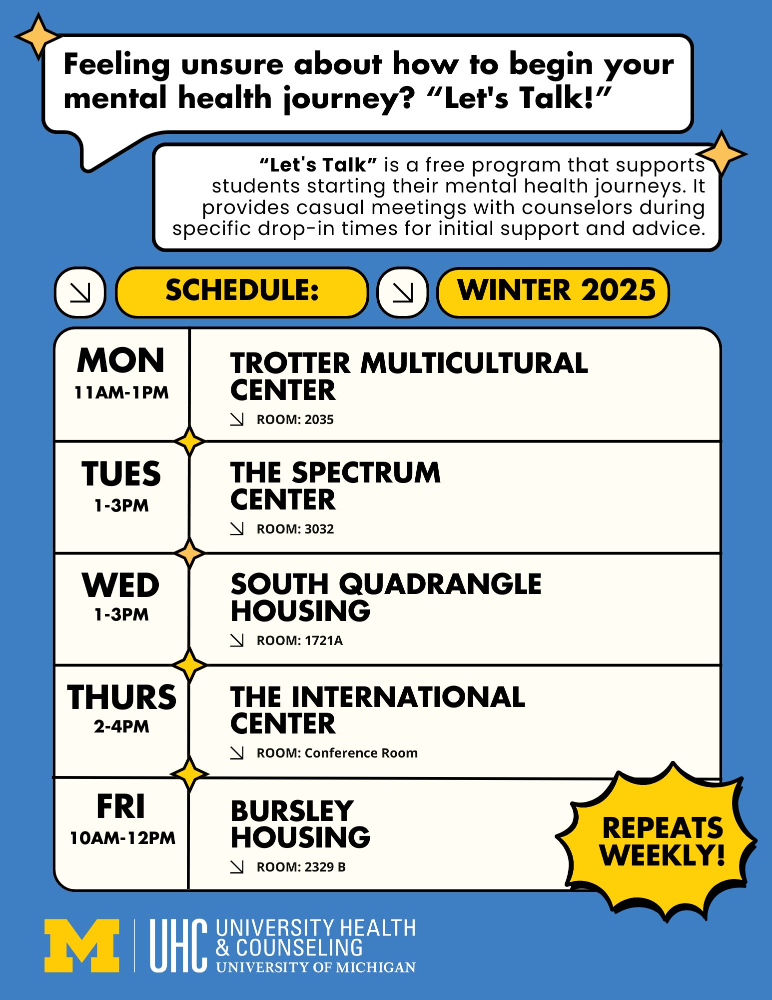
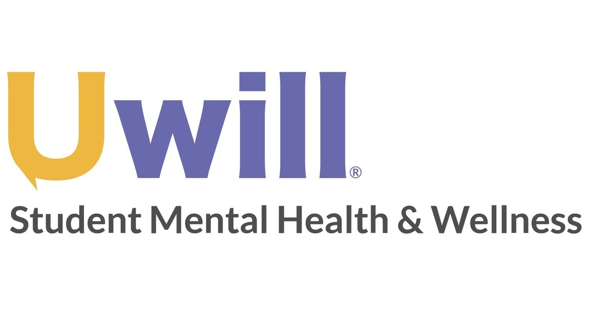

Quick Actions
About Us
University Health & Counseling (UHC) supports the health and well-being of the campus community. We are inspired to help students realize their potential, cope with the stresses of life, work productively, and connect meaningfully with others.
UHC is made up of Counseling and Psychological Services (CAPS), which offers counseling services, and University Health Service (UHS), which offers medical services. This website is about CAPS. For information about UHS, please visit the UHS website.
CAPS is committed to creating an environment based on our values of multicultural, multi-disciplinary and multi-theoretical practices that allow our diverse student body to access care, receive high quality services and take positive pathways to mental health. We are happy to offer both in-person and virtual services.
Our Support Tools
- Let's Talk

"Let's Talk” is a free program that supports students starting their mental health journeys. It provides casual meetings with counselors during specific drop-in times for initial support and advice."
- Individual Peer Counseling

Individual Peer Counseling (IPC) is designed to offer a new way to meet the needs of students across the University of Michigan. We are here to support student mental health and offer students a place to vent.
- Uwill Teletherapy
Services

Uwill is an addition to CAPS services that provides students with video, phone, chat, and message sessions with licensed mental health professionals at no cost. This additional counseling option offers students greater flexibility and allows CAPS to expand its service capacity.
- Togetherall

U-M Counseling & Psychological Services (CAPS) welcomes all of our 1st year students including those who are living on campus and those who are located remotely.
Get In Touch
CAPS: Counseling and Psychological Services is located at the 4th floor of the Michigan Union: Michigan Union, 530 South State Street, Suite 4079, Ann Arbor, MI 48109.
You can also reach us 24/7 at (734) 764-8312 or via email at caps-uofm@umich.edu.
CAPS has a limited number of private spaces available for students to connect with their counselor via telecounseling. Please contact the front desk for more information on those private spaces.
Disclaimers
Please Note: During high-demand periods, CAPS will be unable to accommodate class-related interviews and/or projects. Many students are able to find the information they need within our website and our annual reports.
The CAPS office is unable to participate in scavenger hunts for students due to maintaining the confidentiality of our clients. However, you are welcome to direct students to the wellness zone, which has a separate entrance adjacent to CAPS. If you have any questions, please feel free to contact us.